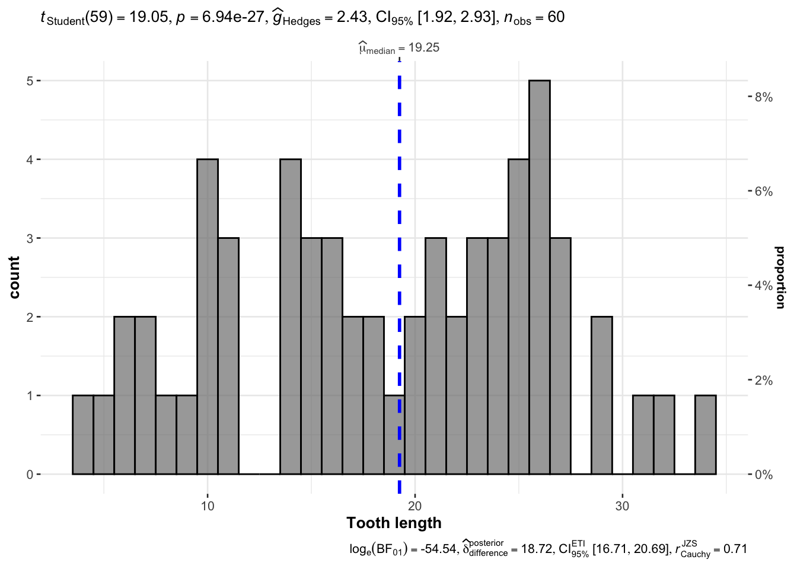
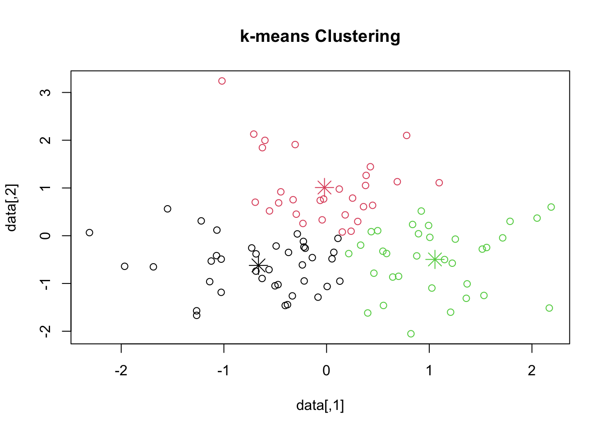
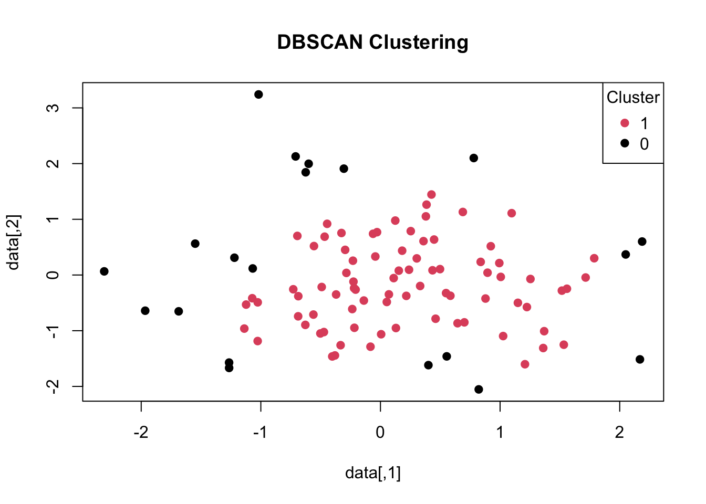

Chapter 3 Diagnostic analytics
3.1 工具箱
3.1.1 分析方法
- 率值波动分析
看数值的波动 是哪个维度的值变化导致的.
绝对值波动分析
漏斗分析
就是看不不同关键环节的转化率
- 流程分析
类似上面 100% - 100%
- 矩阵分析法
RMF 模型 波士顿矩阵
3.1.3 分组图形
最常用的就是使用ggplot 来进行数据可视化.
## You can cite this package as:
## Patil, I. (2021). Visualizations with statistical details: The 'ggstatsplot' approach.
## Journal of Open Source Software, 6(61), 3167, doi:10.21105/joss.03167# 创建示例数据
set.seed(123)
data <- data.frame(
Group = rep(c("A", "B"), each = 100),
Value = c(rnorm(100), rnorm(100, mean = 2))
)
# 绘制分组小提琴图
ggplot(data, aes(x = Group, y = Value, fill = Group)) +
geom_violin(trim = FALSE, draw_quantiles = c(0.25, 0.5, 0.75)) +
geom_boxplot(width = 0.1, fill = "white", color = "black", alpha = 0) +
theme_minimal()
当然, 可以直接使用ggstatsplot
3.1.4 列联表分析
library(crosstable)
ct2 = crosstable(mtcars2, c(starts_with("cy"), ends_with("at")), by=c(am, vs),
label=FALSE, num_digits=3, funs=c(mean, quantile),
funs_arg=list(probs=c(.25,.75))) %>%
as_flextable(compact=TRUE, header_show_n=1:2)
ct2variable | vs=straight (N=14) | vs=vshaped (N=18) | ||
|---|---|---|---|---|
am=auto (N=7) | am=manual (N=7) | am=auto (N=12) | am=manual (N=6) | |
cyl | ||||
4 | 3 (27.27%) | 7 (63.64%) | 0 (0%) | 1 (9.09%) |
6 | 4 (57.14%) | 0 (0%) | 0 (0%) | 3 (42.86%) |
8 | 0 (0%) | 0 (0%) | 12 (85.71%) | 2 (14.29%) |
drat | ||||
mean | 3.570 | 4.149 | 3.121 | 3.935 |
quantile 25% | 3.385 | 3.965 | 3.052 | 3.690 |
quantile 75% | 3.920 | 4.165 | 3.165 | 4.140 |
3.1.5 卡方和t 检验
# 加载数据集
data(mtcars)
# 对燃料类型进行编码（汽油为0，燃料添加剂为1）
mtcars$Fuel <- ifelse(mtcars$carb > 2, 1, 0)
# 卡方检验
chisq.test(table(mtcars$Fuel, mtcars$disp > median(mtcars$disp)))##
## Pearson's Chi-squared test with Yates' continuity correction
##
## data: table(mtcars$Fuel, mtcars$disp > median(mtcars$disp))
## X-squared = 2.0078, df = 1, p-value = 0.1565##
## Welch Two Sample t-test
##
## data: mpg by Fuel
## t = 4.61, df = 26.255, p-value = 9.218e-05
## alternative hypothesis: true difference in means between group 0 and group 1 is not equal to 0
## 95 percent confidence interval:
## 4.163935 10.859594
## sample estimates:
## mean in group 0 mean in group 1
## 23.61176 16.100003.1.6 异常值检验
- 基于统计学的方法：
Z 分数检验：基于观测值与平均值之间的偏差来识别异常值。
# 创建示例数据
data <- rnorm(100)
# 计算 Z 分数
z_scores <- (data - mean(data)) / sd(data)
# 确定阈值
threshold <- 2
# 标记异常值
outliers <- abs(z_scores) > threshold
# 显示异常值
data[outliers]## [1] -2.564019 2.701352 -2.633217 2.791228 2.470401 2.563455 -2.529359- 箱线图方法：利用箱线图检测数据中的异常值。

## [1] -2.787847- 基于机器学习的方法：
Isolation Forest：利用随机树来检查异常值。为了说明隔离森林的优点，下一个例子将生成两组正态分布的数字，并将沿途添加一个离群值，如果单独查看变量，则无法确定这个离群值。
# 安装并加载 'isotree' 包
# install.packages("isotree")
library(isotree)
## Randomly-generated data from different distributions
set.seed(1)
cluster1 <- data.frame(
x = rnorm(1000, -1, .4),
y = rnorm(1000, -1, .2)
)
cluster2 <- data.frame(
x = rnorm(1000, +1, .2),
y = rnorm(1000, +1, .4)
)
outlier <- data.frame(
x = -1,
y = 1
)
### Putting them together
X <- rbind(cluster1, cluster2, outlier)
### Function to produce a heatmap of the scores
pts = seq(-3, 3, .1)
space_d <- expand.grid(x = pts, y = pts)
plot.space <- function(Z, ttl, cex.main = 1.4) {
image(pts, pts, matrix(Z, nrow = length(pts)),
col = rev(heat.colors(50)),
main = ttl, cex.main = cex.main,
xlim = c(-3, 3), ylim = c(-3, 3),
xlab = "", ylab = "")
par(new = TRUE)
plot(X, type = "p", xlim = c(-3, 3), ylim = c(-3, 3),
col = "#0000801A",
axes = FALSE, main = "",
xlab = "", ylab = "")
}
model <- isolation.forest(X, ndim=1, ntrees=100, nthreads=1)
scores <- predict(model, space_d)
par(mar = c(2.5,2.2,2,2.5))
plot.space(scores, "Outlier Scores\n(clustered data with an outlier on top)", 1.0)在看另外一个异常值机i暗沉呢的例子:
# 加载所需的包
library(isotree)
# 创建示例数据
set.seed(42)
X <- matrix(rnorm(200), ncol = 2)
X_outliers <- matrix(runif(40, min = -4, max = 4), ncol = 2)
X <- rbind(X, X_outliers)
# 训练 Isolation Forest 模型
model <- isolation.forest(X, nthreads = 1) # 使用单个线程进行训练
# 预测数据的异常值得分
scores <- predict(model, X, output_in_leaf = FALSE)
# 定义异常值阈值（例如，异常值得分高于阈值的数据点被认为是异常值）
threshold <- quantile(scores, 0.95)
# 根据异常值阈值绘制异常值检测结果
plot(X, col = ifelse(scores > threshold, "red", "black"), pch = 19, main = "Isolation Forest", xlab = "", ylab = "")
legend("topright", legend = c("Normal", "Anomaly"), col = c("black", "red"), pch = 19)- Local Outlier Factor (LOF)：基于数据点周围的密度来识别异常值。
##
## Attaching package: 'dbscan'## The following object is masked from 'package:stats':
##
## as.dendrogram# 创建示例数据框
data <- data.frame(x = rnorm(100), y = rnorm(100))
# 使用 LOF 进行异常值检测
lof <- dbscan::lof(data)
# 标记异常值
threshold <- 2
outliers <- data[lof > threshold, ]
# 显示异常值
outliers## x y
## 49 -2.69993 -0.41482433.1.7 关联规则
关联规则是数据挖掘中的一种技术，用于发现数据集中项之间的关联关系。其原理基于两个重要的概念：支持度（Support）和置信度（Confidence）。
支持度（Support）： 支持度是一个项集（itemset）在数据集中出现的频率，通常以百分比或小数表示。对于项集{X, Y}，支持度表示包含X和Y的交易数量与总交易数量之比。支持度越高，表示该项集在数据集中出现的频率越大。
支持度（{X, Y}）= (包含X和Y的交易数量) / (总交易数量)
置信度（Confidence）： 置信度是指在发生X的情况下，Y发生的条件概率。对于项集{X, Y}，置信度表示在包含X的交易中，Y也出现的概率。
置信度（X → Y）= (包含X和Y的交易数量) / (包含X的交易数量)
## Loading required package: Matrix##
## Attaching package: 'arules'## The following objects are masked from 'package:base':
##
## abbreviate, write# 创建示例数据集
transactions <- list(
c("milk", "bread", "butter"),
c("bread", "butter"),
c("milk", "bread", "butter", "cheese"),
c("milk", "bread"),
c("milk", "butter", "cheese")
)
# 转换数据集为 transactions 类型
transactions <- as(transactions, "transactions")
# 执行关联规则分析
rules <- apriori(transactions, parameter = list(support = 0.2, confidence = 0.6))## Apriori
##
## Parameter specification:
## confidence minval smax arem aval originalSupport maxtime support minlen
## 0.6 0.1 1 none FALSE TRUE 5 0.2 1
## maxlen target ext
## 10 rules TRUE
##
## Algorithmic control:
## filter tree heap memopt load sort verbose
## 0.1 TRUE TRUE FALSE TRUE 2 TRUE
##
## Absolute minimum support count: 1
##
## set item appearances ...[0 item(s)] done [0.00s].
## set transactions ...[4 item(s), 5 transaction(s)] done [0.00s].
## sorting and recoding items ... [4 item(s)] done [0.00s].
## creating transaction tree ... done [0.00s].
## checking subsets of size 1 2 3 4 done [0.00s].
## writing ... [21 rule(s)] done [0.00s].
## creating S4 object ... done [0.00s].## lhs rhs support confidence coverage lift count
## [1] {} => {bread} 0.8 0.8 1.0 1.00 4
## [2] {} => {butter} 0.8 0.8 1.0 1.00 4
## [3] {} => {milk} 0.8 0.8 1.0 1.00 4
## [4] {cheese} => {butter} 0.4 1.0 0.4 1.25 2
## [5] {cheese} => {milk} 0.4 1.0 0.4 1.25 2## lhs rhs support confidence coverage lift
## [1] {} => {bread} 0.8 0.8000000 1.0 1.0000000
## [2] {} => {butter} 0.8 0.8000000 1.0 1.0000000
## [3] {} => {milk} 0.8 0.8000000 1.0 1.0000000
## [4] {cheese} => {butter} 0.4 1.0000000 0.4 1.2500000
## [5] {cheese} => {milk} 0.4 1.0000000 0.4 1.2500000
## [6] {bread} => {butter} 0.6 0.7500000 0.8 0.9375000
## [7] {butter} => {bread} 0.6 0.7500000 0.8 0.9375000
## [8] {bread} => {milk} 0.6 0.7500000 0.8 0.9375000
## [9] {milk} => {bread} 0.6 0.7500000 0.8 0.9375000
## [10] {butter} => {milk} 0.6 0.7500000 0.8 0.9375000
## [11] {milk} => {butter} 0.6 0.7500000 0.8 0.9375000
## [12] {bread, cheese} => {butter} 0.2 1.0000000 0.2 1.2500000
## [13] {bread, cheese} => {milk} 0.2 1.0000000 0.2 1.2500000
## [14] {butter, cheese} => {milk} 0.4 1.0000000 0.4 1.2500000
## [15] {cheese, milk} => {butter} 0.4 1.0000000 0.4 1.2500000
## [16] {butter, milk} => {cheese} 0.4 0.6666667 0.6 1.6666667
## [17] {bread, butter} => {milk} 0.4 0.6666667 0.6 0.8333333
## [18] {bread, milk} => {butter} 0.4 0.6666667 0.6 0.8333333
## [19] {butter, milk} => {bread} 0.4 0.6666667 0.6 0.8333333
## [20] {bread, butter, cheese} => {milk} 0.2 1.0000000 0.2 1.2500000
## [21] {bread, cheese, milk} => {butter} 0.2 1.0000000 0.2 1.2500000
## count
## [1] 4
## [2] 4
## [3] 4
## [4] 2
## [5] 2
## [6] 3
## [7] 3
## [8] 3
## [9] 3
## [10] 3
## [11] 3
## [12] 1
## [13] 1
## [14] 2
## [15] 2
## [16] 2
## [17] 2
## [18] 2
## [19] 2
## [20] 1
## [21] 13.1.8 k means
K均值聚类是一种常见的无监督学习算法，用于将数据点分成K个簇。它的原理如下：
选择簇的数量 (K): 首先，需要确定要将数据分成多少个簇，即K的值。这通常是通过先验知识或基于问题的具体需求来确定的。
初始化簇中心: 随机选择K个数据点作为初始簇中心，这些点将用于定义每个簇的中心。
分配数据点: 对于每个数据点，计算它与每个簇中心的距离，通常使用欧氏距离或其他距离度量。然后，将数据点分配到距离最近的簇。
更新簇中心: 对于每个簇，计算其所有数据点的均值（中心），并将该均值作为新的簇中心。
重复分配和更新: 重复步骤3和步骤4，直到簇中心不再发生显著变化，或者达到预定的停止条件，例如达到最大迭代次数。
得到最终结果: 当算法停止时，数据点将被分为K个簇，每个簇由一组相似的数据点组成。
K均值聚类的目标是最小化每个簇内数据点到簇中心的平方距离之和，即最小化簇内的方差。这使得每个簇内的数据点彼此更加相似，而不同簇之间的数据点差异更大。
需要注意的是，K均值聚类对初始簇中心的选择敏感，不同的初始选择可能会导致不同的聚类结果。因此，通常会多次运行K均值算法，每次使用不同的初始簇中心，然后选择产生最小方差的聚类结果。
K均值聚类是一种快速且有效的聚类方法，但它对簇的形状和大小的假设是均匀的，因此在某些情况下可能不适用。
# 加载必要的库
library(cluster)
# 创建示例数据
set.seed(123)
data <- matrix(rnorm(200), ncol = 2)
# 执行 k 均值聚类
k <- 3 # 指定要聚类的簇的数量
kmeans_result <- kmeans(data, centers = k)
# 打印聚类结果
print(kmeans_result)## K-means clustering with 3 clusters of sizes 38, 29, 33
##
## Cluster means:
## [,1] [,2]
## 1 -0.66333772 -0.6219885
## 2 -0.02025692 1.0093022
## 3 1.05560227 -0.4966328
##
## Clustering vector:
## [1] 1 2 3 1 1 3 3 1 1 2 3 2 3 1 2 3 3 1 3 1 1 1 1 1 2 1 3 2 1 3 2 2 3 3 3 2 3
## [38] 2 2 1 2 1 1 3 3 1 1 2 2 1 2 2 2 3 1 3 1 3 2 3 2 1 1 2 1 2 2 1 3 3 1 1 3 2
## [75] 1 3 1 1 2 1 1 2 1 3 1 3 2 3 2 3 3 3 2 1 3 2 3 3 1 1
##
## Within cluster sum of squares by cluster:
## [1] 23.92627 22.26036 24.96196
## (between_SS / total_SS = 59.4 %)
##
## Available components:
##
## [1] "cluster" "centers" "totss" "withinss" "tot.withinss"
## [6] "betweenss" "size" "iter" "ifault"# 绘制聚类结果
plot(data, col = kmeans_result$cluster, main = "k-means Clustering")
points(kmeans_result$centers, col = 1:k, pch = 8, cex = 2)
3.1.9 层级聚类
层次聚类（Hierarchical Clustering）是一种基于树形结构的聚类方法，它将数据点逐步合并成越来越大的簇或分裂成越来越小的子簇，最终构建出一个层次结构的聚类。这种层次结构通常以树状图（树状图）的形式呈现，被称为树状图聚类树或谱系树。
层次聚类有两种主要方法：凝聚式聚类（Agglomerative Clustering）和分裂式聚类（Divisive Clustering）。
凝聚式聚类的原理：
初始化： 每个数据点被视为一个单独的簇，形成初始的n个簇，其中n是数据点的数量。
合并过程： 从初始簇中找到最接近（相似性最高）的两个簇，然后将它们合并成一个新的簇。这一过程不断重复，逐渐减少簇的数量。
构建聚类树： 在合并过程中，可以构建一个树形结构，其中每个节点代表一个簇，叶节点代表单个数据点。这个树状图被称为谱系树。
停止条件： 合并过程一直进行，直到满足某种停止条件，例如达到指定的簇的数量或达到某个相似性阈值。
# 加载必要的库
library(stats)
# 创建示例数据
set.seed(123)
data <- matrix(rnorm(200), ncol = 2)
# 计算距离矩阵
dist_matrix <- dist(data)
# 执行层次聚类
hclust_result <- hclust(dist_matrix, method = "ward.D2")
# 绘制树状图
plot(hclust_result, main = "Hierarchical Clustering Dendrogram")在这个示例中，我们首先生成了一个包含随机数据的示例数据集 data。然后，我们使用 dist() 函数计算了数据点之间的距离矩阵。接着，我们使用 hclust() 函数执行了层次聚类，指定了使用 Ward 方法作为聚类的方法。聚类结果保存在 hclust_result 变量中。最后，我们使用 plot() 函数绘制了聚类结果的树状图。
3.1.10 DBSCAN
DBSCAN（Density-Based Spatial Clustering of Applications with Noise）是一种密度聚类方法，其原理如下：
核心对象（Core Point）： DBSCAN算法首先定义了核心对象，即在半径ε内至少有MinPts个点的数据点。这意味着核心对象是那些周围有足够多邻居的点，它们有足够的密度。
直接密度可达（Directly Density-Reachable）： 一个点A被称为直接密度可达于另一个点B，如果点B是点A在半径ε内的邻居，即B在A的ε邻域内，且A是核心对象。
密度可达（Density-Reachable）： 一个点A被称为密度可达于另一个点B，如果存在一系列核心对象C1, C2, …, Cn，使得Ci是Ci+1的直接密度可达点，而Cn是B的直接密度可达点。这意味着A可以通过一系列直接密度可达关系到达B。
密度相连（Density-Connected）： 如果存在一个点O，使得点A和点B都是O的密度可达点，那么A和B被称为密度相连。这是一个等价关系。
基于上述原理，DBSCAN将数据点分为以下几类：
- 核心对象（Core Points）： 这些是密度足够大以至于它们被认为是群集的核心的数据点。
- 边界点（Border Points）： 这些点不是核心对象，但位于核心对象的ε邻域内。它们属于某个群集，但不是群集的核心。
- 噪声点（Noise Points）： 这些点既不是核心对象也不是边界点，它们是离群值或噪声点，不属于任何群集。
DBSCAN的主要优点包括：
- 能够发现任意形状的聚类，不受簇的形状和大小限制。
- 不需要预先指定簇的数量，这与K均值等方法不同。
- 能够有效处理噪声数据点，将其识别为噪声点。
然而，DBSCAN的性能对两个关键参数MinPts和ε的选择敏感，不适用于高维数据集，而且对密度变化较大的数据集可能表现不佳。因此，在使用DBSCAN时需要谨慎选择参数和理解数据的特点。
##
## Attaching package: 'fpc'## The following object is masked from 'package:dbscan':
##
## dbscan# 创建示例数据
set.seed(123)
data <- matrix(rnorm(200), ncol = 2)
# 执行 DBSCAN 聚类
dbscan_result <- dbscan(data, eps = 0.5, MinPts = 5)
# 绘制聚类结果
plot(data, col = dbscan_result$cluster + 1, pch = 19, main = "DBSCAN Clustering")
legend("topright", legend = unique(dbscan_result$cluster), col = unique(dbscan_result$cluster) + 1, pch = 19, title = "Cluster") 在这个示例中，我们首先生成了一个包含随机数据的示例数据集 data。然后，我们使用 dbscan() 函数执行了 DBSCAN 聚类，指定了邻域半径 eps 和最小点数 MinPts 的参数。聚类结果保存在 dbscan_result 变量中。最后，我们使用 plot() 函数绘制了聚类结果的散点图，每个聚类用不同的颜色表示。
你可以根据自己的数据集和需求调整示例中的参数，例如邻域半径 eps 和最小点数 MinPts 等，以便更好地适应你的实际应用场景。
3.1.11 WOE 分析
library(scorecard)
data(germancredit)
bins2_tree = woebin(germancredit, y="creditability",
x=c("credit.amount","housing"), method="tree")## ℹ Creating woe binning ...## ✔ Binning on 1000 rows and 3 columns in 00:00:02## $credit.amount
## variable bin count count_distr neg pos posprob woe
## 1: credit.amount [-Inf,1400) 267 0.267 185 82 0.3071161 0.03366128
## 2: credit.amount [1400,1800) 105 0.105 87 18 0.1714286 -0.72823850
## 3: credit.amount [1800,4000) 382 0.382 287 95 0.2486911 -0.25830746
## 4: credit.amount [4000,9200) 196 0.196 120 76 0.3877551 0.39053946
## 5: credit.amount [9200, Inf) 50 0.050 21 29 0.5800000 1.17007125
## bin_iv total_iv breaks is_special_values
## 1: 0.0003045545 0.1812204 1400 FALSE
## 2: 0.0468153322 0.1812204 1800 FALSE
## 3: 0.0241086966 0.1812204 4000 FALSE
## 4: 0.0319870413 0.1812204 9200 FALSE
## 5: 0.0780047502 0.1812204 Inf FALSE
##
## $housing
## variable bin count count_distr neg pos posprob woe bin_iv
## 1: housing rent 179 0.179 109 70 0.3910615 0.4044452 0.03139265
## 2: housing own 713 0.713 527 186 0.2608696 -0.1941560 0.02579501
## 3: housing for free 108 0.108 64 44 0.4074074 0.4726044 0.02610577
## total_iv breaks is_special_values
## 1: 0.08329343 rent FALSE
## 2: 0.08329343 own FALSE
## 3: 0.08329343 for free FALSE